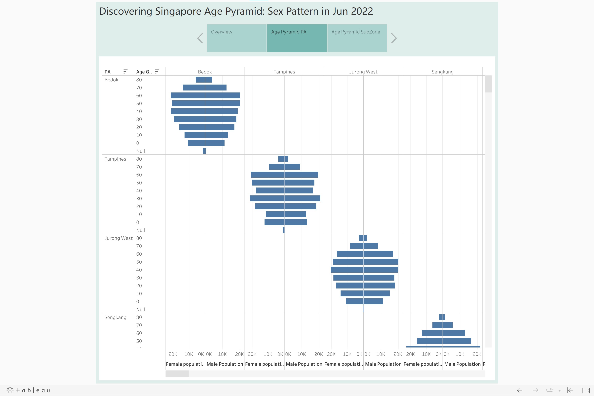
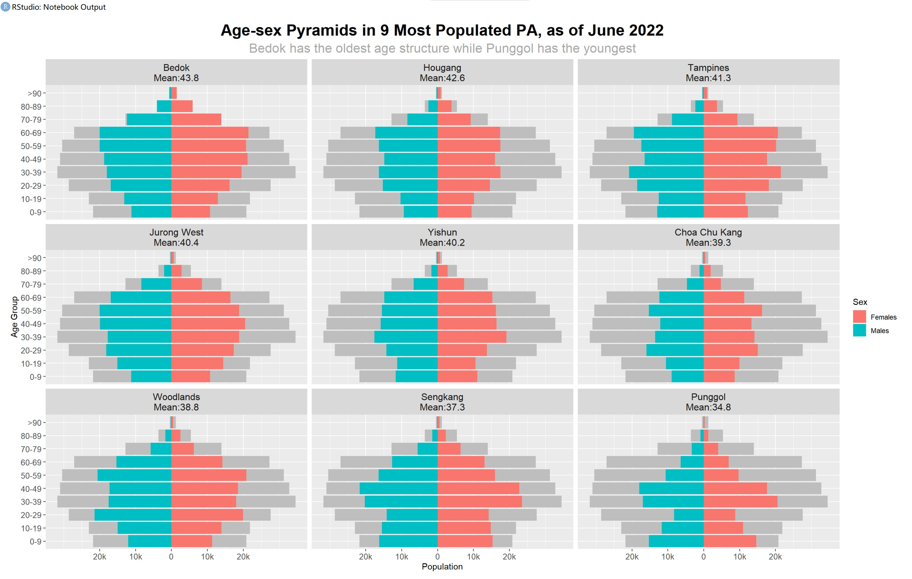
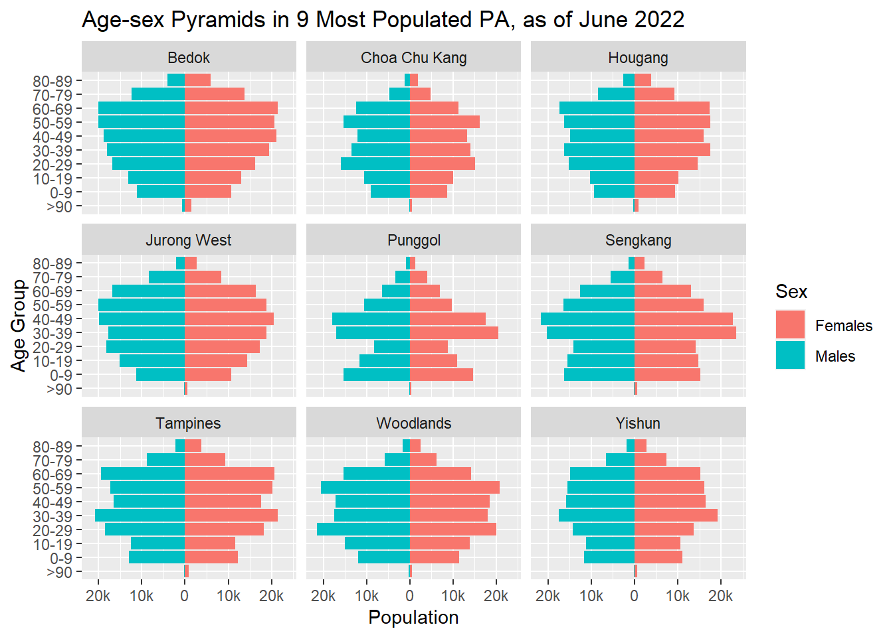
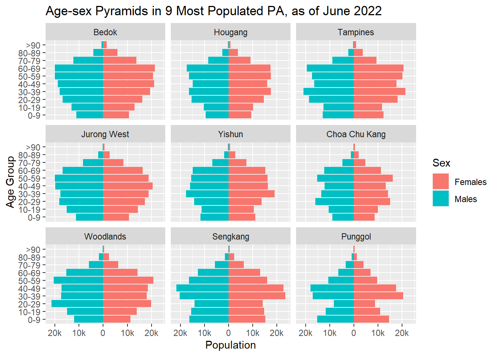
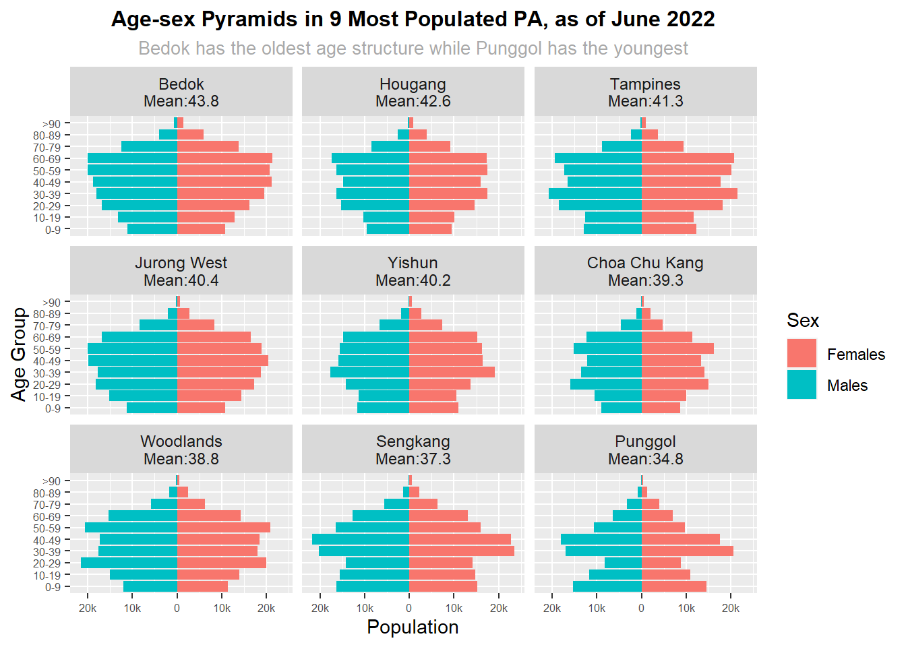
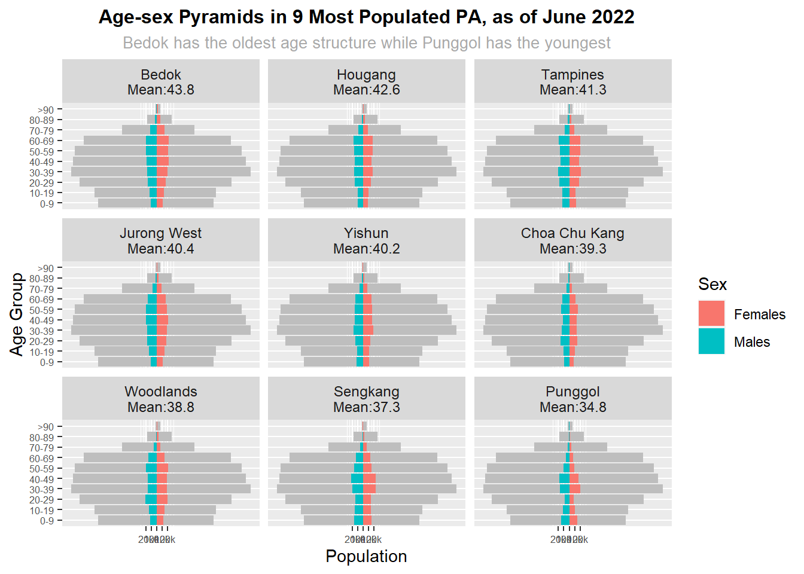
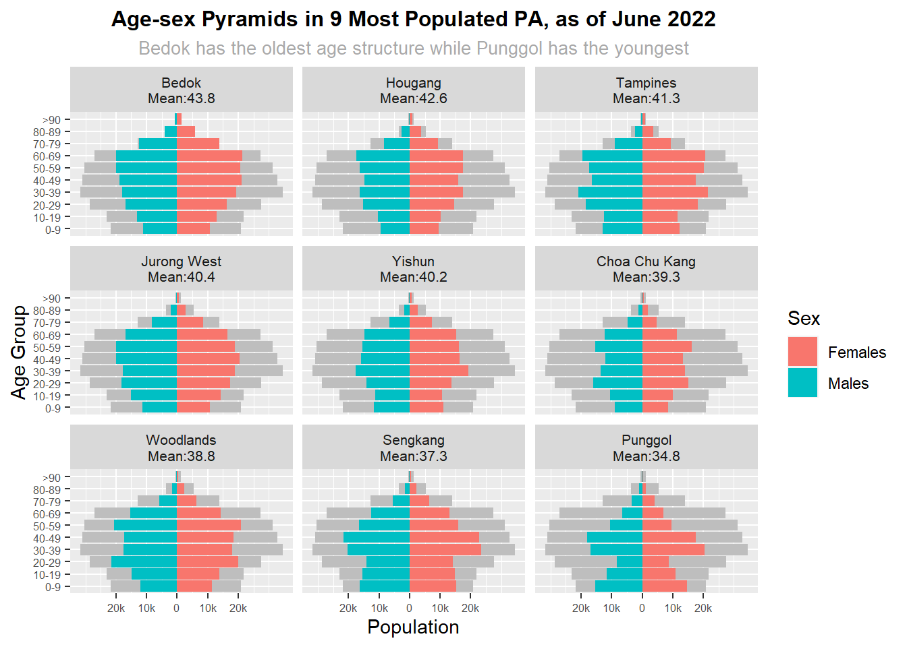

pacman::p_load(tidyverse)Take Home Exercise 02
Remaking peer’s original design by improving chart’s clarity and aesthetics
1. Task
The Task In this take-home exercise, you are required to:
select one of the Take-home Exercise 1 prepared by your classmate,
critic the submission in terms of clarity and aesthetics,
prepare a sketch for the alternative design by using the data visualisation design principles and best practices, and
remake the original design by using ggplot2, ggplot2 extensions and tidyverse packages.
2. Critique
The original design is as shown.

Clarity
The title of dashboard is unclear. We are suppose to represent the distribution of a population by age and sex, but not ‘age pyramid: sex pattern’.
The number of Planning Areas (PA) should be 9, but not all.
There is no annotation, subtitles or note to tell data story. Central tendency measures such as median could be added to provide audience with better interpretation of the distribution.
In a population pyramid, males are usually shown on the left by blue and females are usually shown on the right by pink/red. In the diagram, the different gender are represented by the same color.
The label of the y-axis of age is misleading. The age group should be represented by an interval (0 to 9, 10 to 19, 20 to 29, …) instead of an integer(0,10,20,…). The order of age group is wrong. And it should no start at null and end at 80. In fact, the ‘Null’ in the example should represent the group ‘90_and_above’.
The label of the x-axis is hard to read. In fact, the gender can be represented by legend and the ‘population’ can be labeled just once on x-axis.
There is no update date and data source.
Aesthetics
- The arrangement of pyramids is only in the diagonal of a matrix. The information is not displayed in one page as many space are wasted. We should display the 9 pyramids in 3 * 3 matrix. It enables us to make comparisons quickly and easily.
3. Remake
The final visualisation is as shown below.

The steps to build such visuallisation using tidyverse are described as follows.
Install and Launching R packages
The code chunk below uses p_load() of pacman package to check if tidyverse packages (ggplot2 belongs to tidyverse packages) are installed in the computer. If they are, then they will be launched into R.
Importing the data
pop_data <- read_csv("data/respopagesexfa2022.csv")Data Preparation
- Delete columns of “SZ”,“FA” and “Time” and keep “PA”, “AG”, “Sex” and “Pop”.
pop_data2 <- pop_data[,!names(pop_data) %in% c("SZ","FA","Time")]
head(pop_data2,5)# A tibble: 5 × 4
PA AG Sex Pop
<chr> <chr> <chr> <dbl>
1 Ang Mo Kio 0_to_4 Males 0
2 Ang Mo Kio 0_to_4 Males 10
3 Ang Mo Kio 0_to_4 Males 20
4 Ang Mo Kio 0_to_4 Males 60
5 Ang Mo Kio 0_to_4 Males 10- Add the ranking number to the PA to find the 9 most populated PA.
pa_pop <- aggregate(Pop~PA,pop_data,sum)
#pa_pop
pa_pop$rank <- NA
pa_pop$rank[order(-pa_pop$Pop)] <- 1:nrow(pa_pop)
nine_most_populated <- filter(pa_pop,rank<=9)
#nine_most_populated
chosen_PA <- nine_most_populated$PA
chosen_PA[1] "Bedok" "Choa Chu Kang" "Hougang" "Jurong West"
[5] "Punggol" "Sengkang" "Tampines" "Woodlands"
[9] "Yishun" - Find the estimated mean age in each PA
pop_data_mean <-
mutate(pop_data2,
# Create New Age groups
AGE = case_when(
AG == "0_to_4" ~ 2,
AG == "5_to_9" ~ 7,
AG == "10_to_14" ~ 12,
AG == "15_to_19" ~ 17,
AG == "20_to_24" ~ 22,
AG == "25_to_29" ~ 27,
AG == "30_to_34" ~ 32,
AG == "35_to_39" ~ 37,
AG == "40_to_44" ~ 42,
AG == "45_to_49" ~ 47,
AG == "50_to_54" ~ 52,
AG == "55_to_59" ~ 57,
AG == "60_to_64" ~ 62,
AG == "65_to_69" ~ 67,
AG == "70_to_74" ~ 72,
AG == "75_to_79" ~ 77,
AG == "80_to_84" ~ 82,
AG == "85_to_89" ~ 87,
AG == "90_and_over" ~ 92
)
)
# Find the total age for population in each age group
pop_data_mean <- pop_data_mean %>%
mutate(
Total_age_pa = ifelse(Pop == "Null", 0, AGE * Pop)
)
head(pop_data_mean,5)# A tibble: 5 × 6
PA AG Sex Pop AGE Total_age_pa
<chr> <chr> <chr> <dbl> <dbl> <dbl>
1 Ang Mo Kio 0_to_4 Males 0 2 0
2 Ang Mo Kio 0_to_4 Males 10 2 20
3 Ang Mo Kio 0_to_4 Males 20 2 40
4 Ang Mo Kio 0_to_4 Males 60 2 120
5 Ang Mo Kio 0_to_4 Males 10 2 20# Calculated the mean age of population in each PA
pa_mean <- aggregate(cbind(Pop,Total_age_pa)~PA,pop_data_mean,sum)
pa_mean <- pa_mean %>%
mutate(
mean_age_pa = Total_age_pa/Pop
)
# Filter the dataset by showing the result of the 9 most populated PA
pa_mean <-pa_mean%>%
filter(PA %in% chosen_PA)
# Arrange the PA by their mean age in descending order
pa_mean <- pa_mean[order(pa_mean$mean_age_pa,decreasing=TRUE),]
pa_mean[c(1,4)] PA mean_age_pa
1 Bedok 43.81877
3 Hougang 42.56407
7 Tampines 41.13840
4 Jurong West 40.39587
9 Yishun 40.24887
2 Choa Chu Kang 39.28368
8 Woodlands 38.82079
6 Sengkang 37.33709
5 Punggol 34.78819Create Visualisation
- Aggregate data using planning area and gender. Note that to build the age-sex pyramid, the male population should be equal to negative of the original value.
pop_data2$Population <- ifelse(pop_data2$Sex == "Males", (-1)*pop_data2$Pop,pop_data2$Pop)
final_pop_data <- aggregate(Population~PA++AG+Sex,FUN = sum,data=pop_data2)
most_populatedPA_pop_data <- final_pop_data%>%filter(final_pop_data$PA %in% chosen_PA)
head(most_populatedPA_pop_data,5) PA AG Sex Population
1 Bedok 0_to_4 Females 4990
2 Choa Chu Kang 0_to_4 Females 4090
3 Hougang 0_to_4 Females 4460
4 Jurong West 0_to_4 Females 4800
5 Punggol 0_to_4 Females 6930- Due to the space constain, we creat a new age group, AGE, where the range of each interval increases from 5 to 10.
most_populatedPA_pop_data <- most_populatedPA_pop_data %>%
mutate(
AGE = case_when(
AG == "0_to_4" | AG == "5_to_9" ~ "0-9",
AG == "10_to_14" | AG == "15_to_19" ~ "10-19",
AG == "20_to_24" | AG == "25_to_29" ~ "20-29",
AG == "30_to_34" | AG == "35_to_39" ~ "30-39",
AG == "40_to_44" | AG == "45_to_49" ~ "40-49",
AG == "50_to_54" | AG == "55_to_59" ~ "50-59",
AG == "60_to_64" | AG == "65_to_69" ~ "60-69",
AG == "70_to_74" | AG == "75_to_79" ~ "70-79",
AG == "80_to_84" | AG == "85_to_89" ~ "80-89",
AG == "90_and_over" ~ ">90"
)
)
most_populatedPA_pop_data <- aggregate(Population ~ PA + Sex + AGE, FUN = sum, data = most_populatedPA_pop_data)
head(most_populatedPA_pop_data,5) PA Sex AGE Population
1 Bedok Females >90 1470
2 Choa Chu Kang Females >90 450
3 Hougang Females >90 880
4 Jurong West Females >90 600
5 Punggol Females >90 280- Join the two dataset: most_populatedPA_pop_data and pa_mean, i.e. add the mean age of each PA to the above table.
#most_populatedPA_pop_data <- left_join(most_populatedPA_pop_data,pa_mean)
#head(most_populatedPA_pop_data,5)- Visualise the 9 age-sex pyramids in a 3 * 3 matrix.
ggplot(most_populatedPA_pop_data,
aes(x = AGE, y = Population, fill = Sex)) +
geom_bar(data = subset(most_populatedPA_pop_data, Sex == "Females"), stat = "identity") +
geom_bar(data = subset(most_populatedPA_pop_data, Sex == "Males"), stat = "identity") +
coord_flip()+
facet_wrap(~ PA,ncol = 3 ) +
labs(title="Age-sex Pyramids in 9 Most Populated PA, as of June 2022", x = "Age Group",y="Population") +
scale_y_continuous(breaks = seq(-20000, 20000, 10000),
labels = paste0(as.character(c('20k','10k','0','10k','20k'))))
- We notices that the order of the age group on y-axis is wrong. Hence, we need to reorder the age groups on y-axis as shown below. Moreover, the 9 most populated PA is arranged according to the mean age in descending order.
most_populatedPA_pop_data$AGE <- factor(most_populatedPA_pop_data$AGE,
levels = c("0-9","10-19","20-29","30-39","40-49","50-59","60-69","70-79","80-89",">90"))
most_populatedPA_pop_data$PA <- factor(most_populatedPA_pop_data$PA,levels =
c("Bedok","Hougang","Tampines","Jurong West","Yishun","Choa Chu Kang", "Woodlands","Sengkang","Punggol"))
pyramids <- ggplot(most_populatedPA_pop_data,
aes(x = AGE, y = Population, fill = Sex)) +
geom_bar(data = subset(most_populatedPA_pop_data, Sex == "Females"), stat = "identity") +
geom_bar(data = subset(most_populatedPA_pop_data, Sex == "Males"), stat = "identity") +
coord_flip()+
facet_wrap(~ PA,ncol = 3 ) +
labs(title="Age-sex Pyramids in 9 Most Populated PA, as of June 2022", x = "Age Group",y="Population") +
scale_y_continuous(breaks = seq(-20000, 20000, 10000),
labels = paste0(as.character(c('20k','10k','0','10k','20k'))))
pyramids
- The above diagram can be improved by adding the mean age in each PA as labels.
labels <- c("Bedok\nMean:43.8","Hougang\nMean:42.6","Tampines\nMean:41.3",
"Jurong West\nMean:40.4","Yishun\nMean:40.2","Choa Chu Kang\nMean:39.3",
"Woodlands\nMean:38.8","Sengkang\nMean:37.3","Punggol\nMean:34.8")
most_populatedPA_pop_data$PA <- factor(most_populatedPA_pop_data$PA, labels = labels)
vis <- ggplot(most_populatedPA_pop_data,
aes(x = AGE, y = Population, fill = Sex)) +
geom_bar(data = subset(most_populatedPA_pop_data, Sex == "Females"), stat = "identity") +
geom_bar(data = subset(most_populatedPA_pop_data, Sex == "Males"), stat = "identity") +
coord_flip()+
facet_wrap(~ PA,ncol = 3 ) +
labs(title="Age-sex Pyramids in 9 Most Populated PA, as of June 2022",
subtitle = "Bedok has the oldest age structure while Punggol has the youngest",
x = "Age Group",y="Population") +
scale_y_continuous(breaks = seq(-20000, 20000, 10000),
labels = paste0(as.character(c('20k','10k','0','10k','20k')))) +
theme(
plot.title = element_text(size = 12, face = "bold",hjust = 0.5),
plot.subtitle = element_text(size = 10, color = "darkgrey",hjust = 0.5),
strip.text.x = element_text(size = 9),
axis.text=element_text(size=6)
)
vis
- A nice improvement is to add the complete data set (Singapore) in the background of each pyramid.
sg_pop_bg <- most_populatedPA_pop_data[,-1]
ggplot(most_populatedPA_pop_data,
aes(x = AGE, y = Population, fill = Sex)) +
geom_bar(data = subset(sg_pop_bg, Sex == "Females"), fill = "grey",stat = "identity") +
geom_bar(data = subset(sg_pop_bg, Sex == "Males"), fill = "grey",stat = "identity") +
geom_bar(data = subset(most_populatedPA_pop_data, Sex == "Females"), stat = "identity") +
geom_bar(data = subset(most_populatedPA_pop_data, Sex == "Males"), stat = "identity") +
coord_flip()+
facet_wrap(~ PA,ncol = 3 ) +
labs(title="Age-sex Pyramids in 9 Most Populated PA, as of June 2022",
subtitle = "Bedok has the oldest age structure while Punggol has the youngest",
x = "Age Group",y="Population") +
scale_y_continuous(breaks = seq(-20000, 20000, 10000),
labels = paste0(as.character(c('20k','10k','0','10k','20k')))) +
theme(
plot.title = element_text(size = 12, face = "bold",hjust = 0.5),
plot.subtitle = element_text(size = 10, color = "darkgrey",hjust = 0.5),
strip.text.x = element_text(size = 9),
axis.text=element_text(size=6)
)
- The pyramids of each PA is too narrow. We need to transform the Singapore population.
sg_pop_bg <- sg_pop_bg %>%
mutate(
trans_pop = ifelse(Population == "Null", 0, 0.2 * Population)
)
head(sg_pop_bg,5) Sex AGE Population trans_pop
1 Females >90 1470 294
2 Females >90 450 90
3 Females >90 880 176
4 Females >90 600 120
5 Females >90 280 56vis <- ggplot(most_populatedPA_pop_data,
aes(x = AGE, y = Population, fill = Sex)) +
geom_bar(data = subset(sg_pop_bg, Sex == "Females"), aes(x = AGE, y = trans_pop), fill = "grey",stat = "identity") +
geom_bar(data = subset(sg_pop_bg, Sex == "Males"), aes(x = AGE, y = trans_pop), fill = "grey",stat = "identity") +
geom_bar(data = subset(most_populatedPA_pop_data, Sex == "Females"), stat = "identity") +
geom_bar(data = subset(most_populatedPA_pop_data, Sex == "Males"), stat = "identity") +
coord_flip()+
facet_wrap(~ PA,ncol = 3 ) +
labs(title="Age-sex Pyramids in 9 Most Populated PA, as of June 2022",
subtitle = "Bedok has the oldest age structure while Punggol has the youngest",
x = "Age Group",y="Population") +
scale_y_continuous(breaks = seq(-20000, 20000, 10000),
labels = paste0(as.character(c('20k','10k','0','10k','20k')))) +
theme(
plot.title = element_text(size = 12, face = "bold",hjust = 0.5),
plot.subtitle = element_text(size = 10, color = "darkgrey",hjust = 0.5),
strip.text.x = element_text(size = 8),
axis.text=element_text(size=6)
)
vis
Data Source: Department of Statistics, Singapore
4. Learning Points
Comparing my design with my classmates’ designs provides me an opportunity to reflect on how does a good design facilitate interpretation of the results. For example,
well worded title, clear annotation, labels as well as numeric values can tell a good data story.
colors are pre-attentively processed and can be used to differentiate genders in the above example.
arrangements of panel charts make comparisons easily.
I appreciate you taking the time to read this article and paying attention to it.